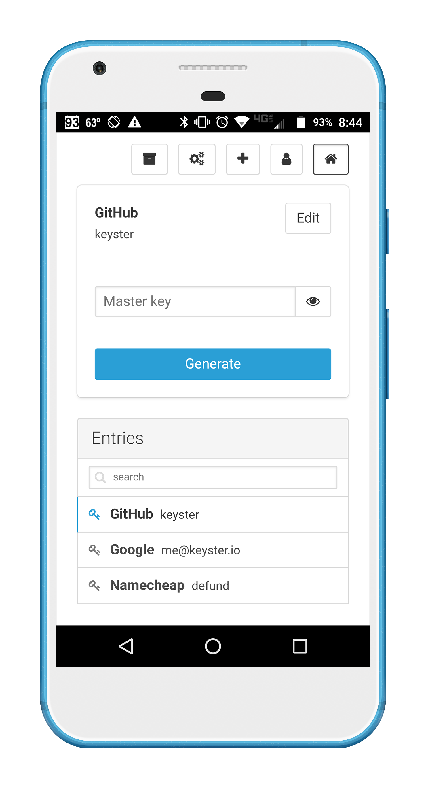
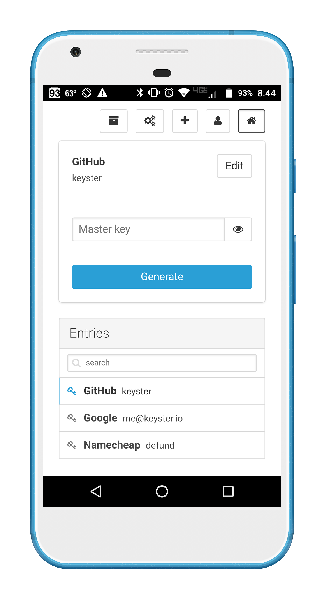

Keyster
A password manager with tact
 

Keyster is a password manager.
Password managers allow you to use one master key and unlock different, complex passwords for each of your accounts. Many password managers already exist, from both third parties and operating systems. So why should you choose Keyster?
Modern Software
Keyster will always be completely free and open source. Any password manager that offers less than that should never be used, considering the importance of the data at hand. Another major goal of Keyster is usability — our UI is clean and consistent across all platforms. We also offer a web client for quick use on public computers or devices that we don't currently support.
Device Sync and Local Backup
Keyster offers access to your passwords on any device without hassle. Any changes you make to your account on one device are automatically synced to the rest. Additionally, all applications store backups locally, in the event that either you or our servers are offline.
Uncompromising Security
As a password manager, Keyster's primary goal is to keep your accounts safe. We will never send or store information that can reveal your master key or any generated passwords. Because of this, you must enter your master key every time you need to log in, and Keyster cannot offer services such as autofill. While convenient, these practices make your passwords vulnerable to anyone with access to your device.
The end result is that an attacker will not be able to extract any meaningful data about your password from our servers, your computer, or the data sent between them. If you are interested in the benefits of password managers and Keyster specifically, we invite you to read our Security page.Keyster is an ongoing project developed by the following: Kevin Higgs, William Wang
GitHub